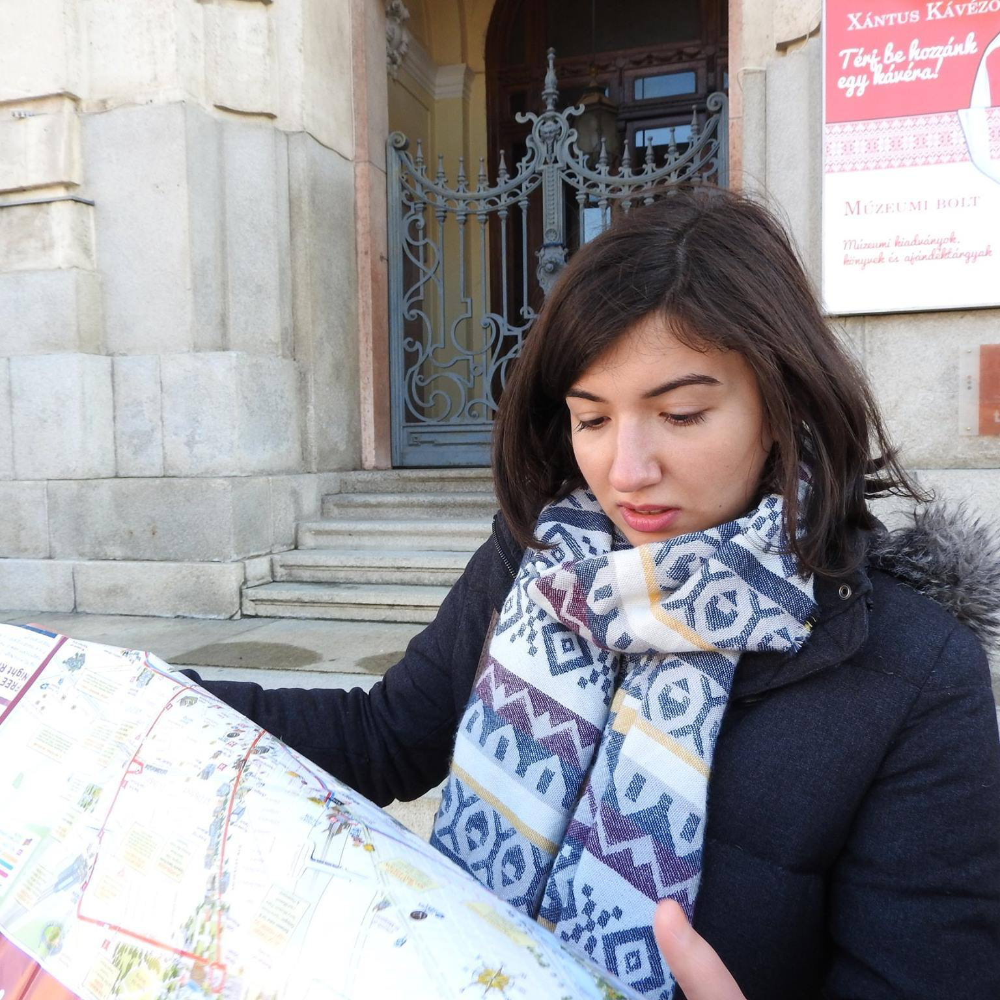

Gizem Çaylak is interested in computer vision, bioinformatics and distributed systems. Her hobbies
are playing violin, travelling, and reading.
Kaan Elgin is interested in computer vision and parallel and distributed systems. His hobbies
are reading, listening to music, swimming, and fitness.
Mehmet Furkan Sahin is interested in distributed systems, databases and cloud architecture.
He enjoys competing in programming competitions. His hobbies are hiking, travelling, listening to music, and swimming.
Onur Uygur is interested in database systems, machine learning and distributed systems.
His hobbies are playing chess and doing windsurfing.